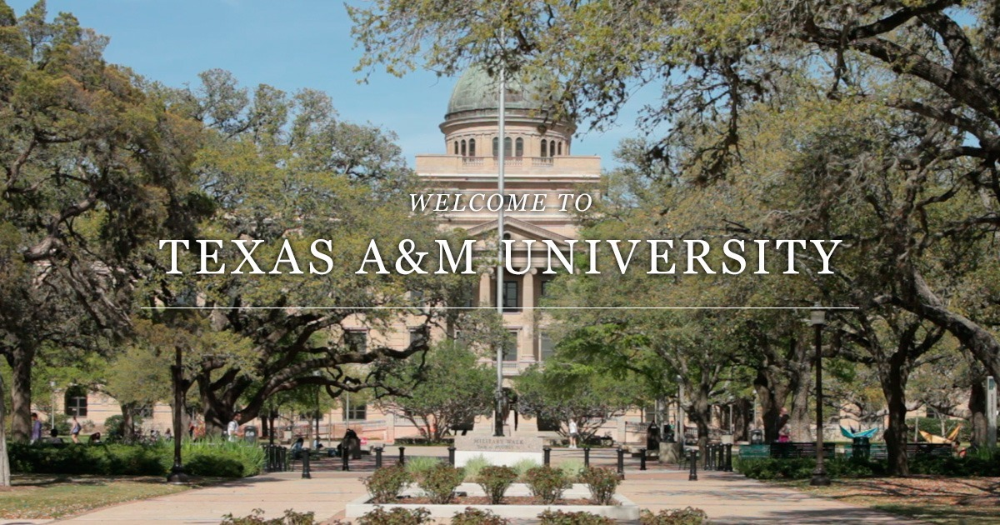

Texas A&M University (Texas A&M, A&M, or TAMU) is a public land-grant research university in College Station, Texas. It was founded in 1876 and became the flagship institution of the Texas A&M University System in 1948. As of 2020, Texas A&M's student body is the second largest in the United States.[10][11][12] Texas A&M's designation as a land, sea, and space grant institution—the only university in Texas to hold all three designations—reflects a range of research with ongoing projects funded by organizations such as the National Aeronautics and Space Administration (NASA), the National Institutes of Health, the National Science Foundation, and the Office of Naval Research. In 2001, Texas A&M was inducted as a member of the Association of American Universities. The school's students, alumni—over 500,000 strong—and sports teams are known as Aggies.
